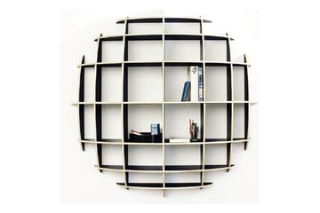
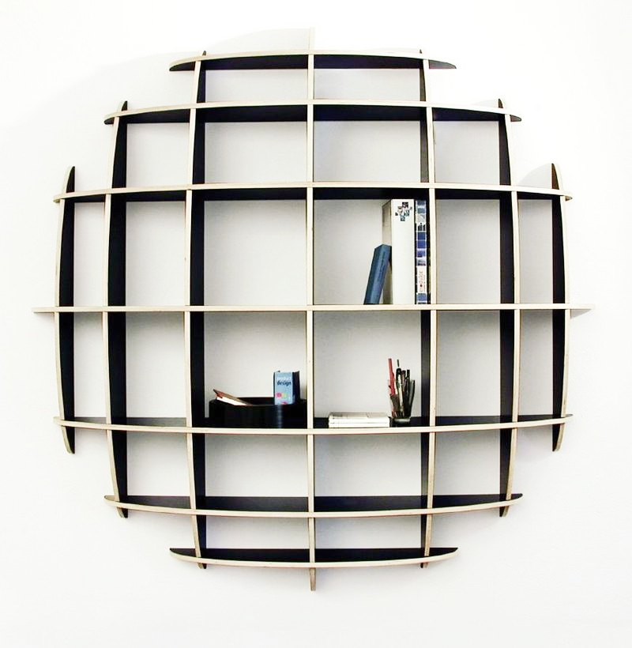

Letting anyone design their own shelves, without being a designer
Madafino is a "Design & Buy" web app. People design their own affordable, custom shelves cabinet on a photo of their own wall. It is made of recyclable materials, cut by digital fabrication (CNC), and delivered flat-packed. This case study follows the UX process from needs and users, through the critical route and sketches, to the wireframes and an interactive prototype.
One of the three co-founders, and the UX lead: user and context research, information architecture, and prototyping.
Make a virtual design process for non-designers that is easy, interactive, efficient and fun, while making sure every technical requirement is met and the design can actually be fabricated.
Start from needs and users, map the critical route, sketch the hardest interaction problems, then wireframe the whole flow on real wall photos.
A first step that shows the core of the system. It can support investor conversations and serve as a test platform for developing an MVP.
Tools: Sketches, Figma, Rhino 3D, Photoshop

A custom cabinet that fits your wall, made near you.
The advantage of the product is that it produces something unique for each user. It fits the space and its use better than generic furniture such as IKEA, and it costs less than a custom cabinet from a carpenter. Most importantly, it empowers the user: it is their design.
Users design a cabinet in the size, shelf spacing and depth they need, on a specific wall, previewed in augmented reality.
The parts geometry is converted automatically into a CNC file and cut by laser from recyclable, affordable materials, in a workshop close to the delivery address. Only the file travels. This keeps the carbon footprint low and delivery fast.
Products arrive flat-packed, and users assemble them with a tutorial that includes an animated instruction clip.
The project was conceived in 2015 by three partners, Eyal Nir, Ran Rosing and me. It paused when each of us continued our career path.
Complex design by non-designers: the effort and knowledge are mediated through the system and the interface. Interactivity is the key.
Starting on paper, with the real need.
Before any screen, I wrote the problem down: what people need from a cabinet, and where generic furniture lets them down. Two needs repeat: storage space and display space. Each is about the wall, and about the items.
Making a virtual design process for non-designers: easy, interactive, efficient and fun, while making sure all technical requirements are met and the design can be fabricated.
Who needs an affordable, best-fit cabinet?
Different parts of the product may appeal to different people, and finding the best market fit takes testing and experimentation. As a starting point, we named the groups who might need an affordable cabinet that fits.
- Temporary residents in rented apartments
- Designers and interior designers
- Students in dormitories and small spaces
- Parents storing toys, books and stationery
- Collectors with many small items to display
- Commercial shops needing temporary display cabinets
- Environmentally aware people who care about sustainable materials and short-distance delivery
A typical user story
Bill comes from a low-income family. He is a university student, a collector and a blogger who wants to write fantasy novels. He rents a small apartment close to campus and needs a storage and display solution for his collection of fantasy figurines and books.
On Thursday evening, after browsing furniture websites on his phone and checking whether each cabinet fits a free space on his living room wall, he logs into Madafino and follows the design-your-own wizard. He takes a photo of the wall, aligns the floor line, and measures the painting on his real wall to give the app a scale. He chooses a round shape, because he finds it cool, and adjusts the shelf spacing to the height of his figurines, because it is important to him that every item fits.
He selects a rounded profile section and measures the base of his figurines to set the shelf depth. Finally he picks a material, recycled birch plywood, and sees the design in augmented reality on his own living room wall. He is so proud that he takes a screenshot and shares it with his girlfriend. After her positive reply, he orders and pays. The delivery arrives the following week, and assembly is easy with the tutorial sent to his email.
The shortest path from a wall to an order.
Mapping the critical route showed how many things a self-design, made-to-order product has to ask of the user. The system needs all of this information, both to show a credible preview and to make the cabinet manufacturable.
As a student living in my college dormitory, with a limited budget and limited room space, I need to store my books, folders and my stuff in a cool-looking shelves cabinet which fits my room wall's dimensions, so that I use my small space efficiently and without paying too much.The user need that frames the critical route
Information the system needs for a preview and for fabrication
Take a good wall photo. Align the image to flatten the perspective. Scale the image to reality by measuring a known object.
Draw the cabinet shape. Position it on the wall surface. Scale it and rotate it.
Position the shelves grid on the shape. Set the spacing of rows and columns. Set the grid rotation.
Choose the shelves profile section and the shelves depth.
Choose the material. Preview in AR. Check out.
Two big questions
How can we make self-design fun? And how can we collect everything the system needs without making the experience technical, tedious and frustrating?
Specific challenges
Every step has its own sub-challenges. These are a few of them.
How do you turn a smartphone, perspective view of a wall into an orthogonal, flat design canvas, and how does the system know the wall's dimensions?
How can precise input be achieved with gestures on a small screen?
How do we prevent construction mistakes by unskilled users?
Should this be a linear wizard or an iterative process with free navigation, and from which stage?
One question per sketch.
Each challenge got a quick sketch before any wireframe. They were cheap ways to test an idea about how a finger, a photo and a wall could work together.
Option 1: Design your own, step by step.
The flow turns the critical route into screens. Each step has a short description of what the user sees and does. Where a step has a sub-state, such as a first-time guide, it is shown in the same column.
Read the steps as text
- Step 1HomeThe user arrives at the home screen and sees the button to start designing their own shelves cabinet. They can register or log in, or skip. The library button shows cabinets designed by others, which they can also buy.
- Step 2Take a photoThe user arrives at the design screen with the option to take a photo of the wall they want to design for, or to choose one from their gallery. The app asks for permission to use the camera and gallery. First-time users get a "How to take an effective photo" guide with an illustration and pointers (step 2.2).
- Step 3Review photoThe user sees the photo and can confirm it or take another. Once confirmed, they continue to the next screen.
- Step 4Align and scaleThe photo is shown, automatically aligned. The user does two things: places a baseline reference on the floor or ceiling line, and inputs a known measurement of a flat object on the wall, such as a painting. A zoom tool can help.
- Step 5Select and place a shapeThe user chooses a shape for the cabinet, and a preview of the cabinet appears on top of the photo. They drag it into place and pinch or spread two fingers to scale it (step 5.1). The shape is cut at the floor and ceiling baselines.
- Step 6Edit grid spacings and angleThe photo is overlaid with the chosen shape, divided by an orthogonal grid. The user resizes rows and columns by tapping, double-tapping and pinching, or types precise dimensions. They can rotate the grid, or enter an angle. Step 6.1 rotates it in 45-degree increments.
- Step 7Edit depth and section profileThe user sees three preset profile sections with a default depth. They pick one and edit its maximum and minimum depth.
- Step 8aPreview in place (AR)The user previews the design as a generated 3D model, or in AR using video mode. They can change materials and colors and watch the preview update.
- Step 8bMaterials and pricesThe price for each material is calculated and shown on screen. Other options include capturing an image, sharing it on social media, and saving the project in its current state.
- Step 8cAdd to cartA Buy button lets the user add the design to the cart and go on to checkout and payment, or save the design and start a new project.
- Step 9Buy and checkoutCheckout and payment.
Navigation drawers
Menus slide in over the full-screen photo and fold away again, so the wall stays the focus. The same logic is designed for landscape.
What lives where, and who can see it.
The sitemap groups the product into a few clear areas: home, registration and login, the design tool, the cart, the profile and an info menu. It shows what is public, what is for members only, and where the user is asked to log in or sign up.
Prototyping the proposed solution.
This is the heart of the work. The screens use real wall photos and a rough 3D model of the cabinet, so the interactions could be judged in a situation close to real use.
Align and scale the photo
Shape, grid and depth
Material, price and order
The user chooses a material and sees it on their own wall, with the price and a Buy Now button.
Where 3D modelling entered the process.
Because this product merges the virtual and the material, I found that low-fidelity illustrations and generic wireframe components were not enough. They let me ignore key constraints and opportunities.
This pushed me to explore ways of bringing 3D models into the wireframing process, so the demonstrations were closer to the real use of the interface. Learning the modelling and fabrication process also gave me a better understanding of the technical and design decisions that a designer, or in this case the user, has to make.
Explore the product concept.
The prototype demonstrates the core product concept, screen structure, and interaction flow — translating an early business idea into a tangible experience that could be reviewed, tested, and improved.
Open in Figma ↗Define the interaction structure.
The mobile wireframe shows how the configuration flow could be structured at screen level, clarifying navigation, hierarchy, and the steps needed to turn a modular shelf idea into a usable product experience.
Open in Figma ↗A first step, with more unknowns than knowns.
This UX design process is a first step that shows the core of the system. It can be used in presentations to potential investors, and as a testing platform to develop an MVP. In a product like this there is more unknown than known: which market will turn out to be a promising fit, which business model will develop, which operating model. All of these can affect the intended user experience and the product itself.